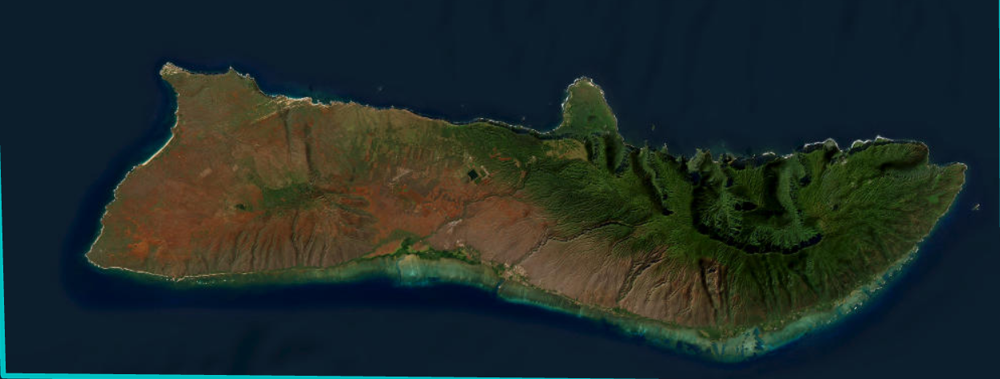
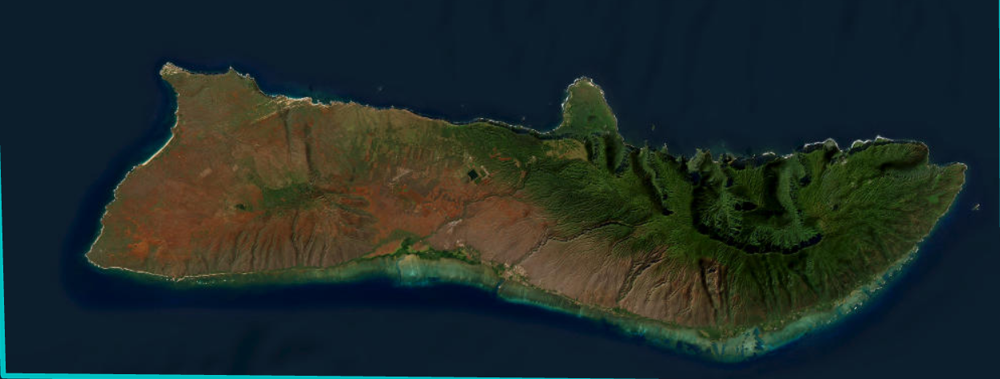

Carto Maps
A collection of carto maps created with the help of ArcGIS and Adobe AI. Credit to the original creator as their work have been the major inspiration for the following map. This is an tourist map pointing to all the attraction on the island.
 
